ここでは、d-salonメンバーオススメの学校近くの飲食店を紹介するよ！今日のお昼選びの参考にしてみては？
《施設一覧》
1. ひまわり弁当
2. 加賀海
3. ヤマト屋
4. マウンテン
5. Φve ファイブ
6. イタリアンダイニング DoNA
7. 日高屋
8. PUNJABI
9. Pandy bakery
10. 鷹の目
ひまわり弁当
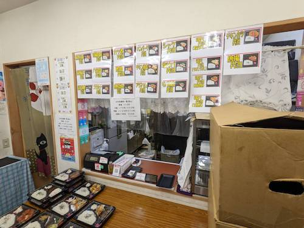
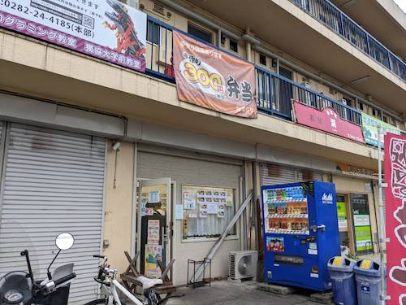
Previous
Next
西門から出て徒歩3分のところにあるのがこのひまわり弁当です。ひまわり弁当の魅力は何といってもその値段！店頭にあるお弁当を各種330円で食べることが出来る学生にはありがたいお弁当屋さんです。21種の通常メニューと5種の日替わりメニューは350円とは思えないほどのボリュームと美味しさで毎日通いたくなるお店です。大盛弁当は税込400円。一品惣菜は税込40円～です。お昼の時間帯には多くの学生や近隣の方で賑わうので出遅れ注意！！西棟1階でも販売しています！
● 定休日：日曜日
● 営業時間：11:00～18:00
(売切次第終了)
● 距離：220m/西門から約3分
※現在の情報とは異なる場合があります
加賀海
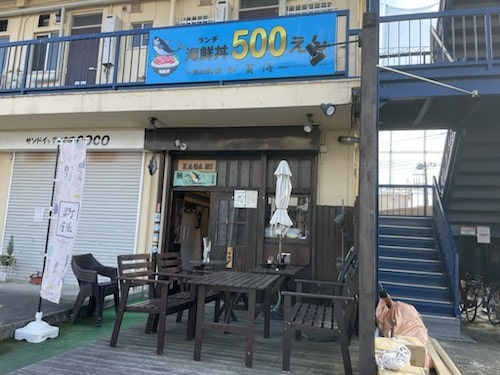
Previous
Next
2013年からある海鮮料理がメインの居酒屋さんです。このお店の魅力は何といってもランチの海鮮丼！マグロが丼にこぼれそうな程たっぷりのった海鮮丼は、お味噌汁付きでなんとワンコイン！本当にオススメなのでぜひ行ってみてください。
● 定休日：日曜日
● 営業時間：11:30～14:00 17:00～22:00
● 距離：210m /西門から約3分
※現在の情報とは異なる場合があります
ヤマト屋
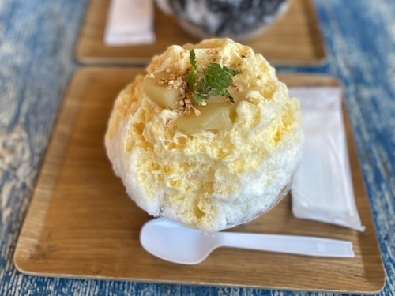
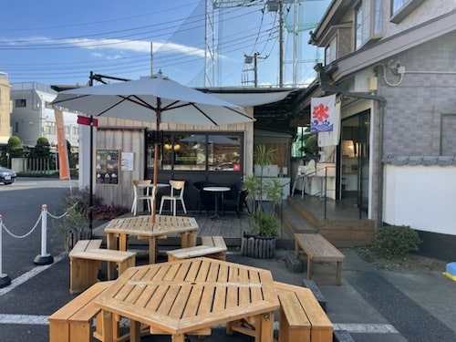
Previous
Next
地元和菓子店の元店主が手掛ける本格的なかき氷を食べることのできるお店です。このお店の特徴はなんといっても、そのメニュー。苺やレモン等の定番商品に加えて、地元、草加で作られた枝豆や草加煎餅を使用した期間限定の商品もあるので、何回行っても飽きることがありません。是非あなたの1位を見つけてみて下さい！
● 定休日：木曜日
● 営業時間：11:00～L.O.17:00
● 距離：350m/東門から約4分
※現在の情報とは異なる場合があります
マウンテン
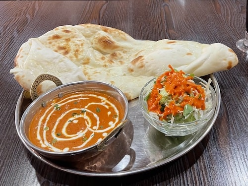
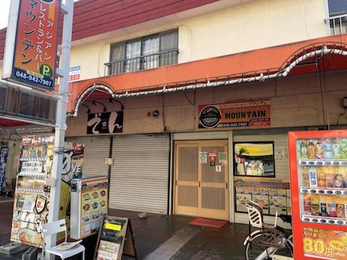
Previous
Next
ここでは本格的なネパール料理やインド料理を堪能することが出来ます。ランチはなんと、カレーとナン（orライス）、サラダ、ドリンクで７００円～!カレーの辛さが選ぶことが出来たり、ナン（ライス）がお代わり無料だったりと学生には嬉しい。店内も広く、裏門から徒歩3分と近いのでランチに行ってみてはいかがでしょうか。
● 定休日：不定休
● 営業時間：月曜～日曜 11:00～15：00 17：00～22：00
● 距離：250m/西門から約3分
※現在の情報とは異なる場合があります
Φve ファイブ
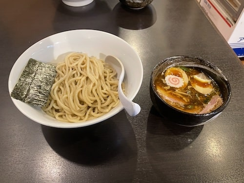
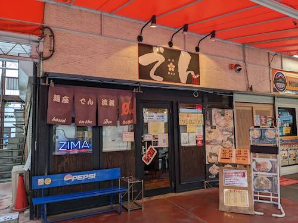
Previous
Next
つけ麺を看板メニューとしているラーメン屋さんです。ここのお店の特徴はつけ麺だけに限らず、二郎系や鶏白湯など様々なラーメンを楽しめることです。また、もちっとした食感の「自家製麺」と硬さが特徴の「ちぃ麺」二種から選ぶことが出来るのも魅力です。
● 定休日：水曜日、毎月第３木曜日
● 営業時間：11:30～21:00/火曜日のみ11:30～15:00
● 距離：260m/東門から約3分
※現在の情報とは異なる場合があります
イタリアンダイニング DoNA
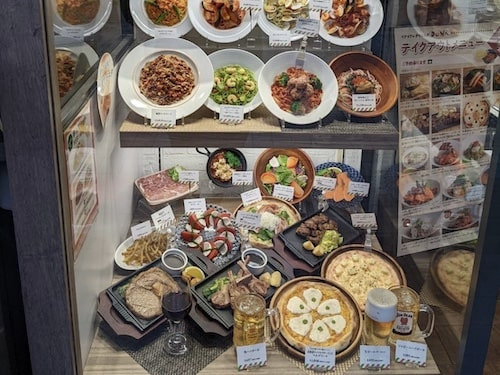
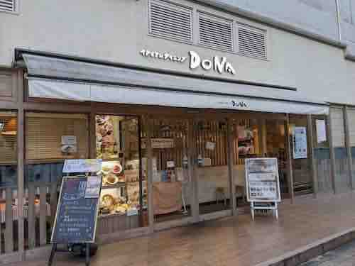
Previous
Next
生パスタがメインのカジュアルレストランです。このお店の魅力は店内のパスタ同価格でS,M,Lサイズを選択することが出来るところです。おなかいっぱい食べられること間違いなし！
● 定休日：不定休
● 営業時間：11:00-23:00
● 距離：400m /東門から約4分
※現在の情報とは異なる場合があります
日高屋
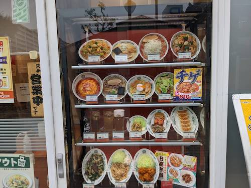
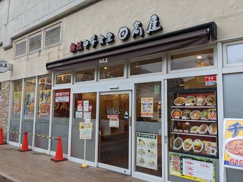
Previous
Next
学生の味方!!中華食堂日高屋です。日高屋の人気メニュー、「中華そば」はなんと税込み390円！！テイクアウトも出来るので、学内でも日高屋の味を楽しむことが出来ます。獨協大学前駅東口すぐにある姉妹店「焼き鳥日高」も必見！
● 定休日：年中無休
● 営業時間：10:00～翌2:00（L.O翌1:30）
● 距離：300m/東門から約4分
※現在の情報とは異なる場合があります
PUNJABI
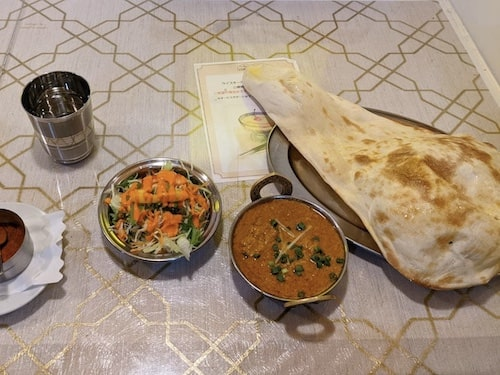
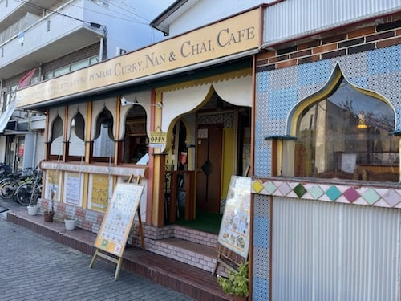
Previous
Next
インド通も太鼓判を押す本格的なインド料理店です。ランチは一律750円で曜日ごとに違うカレーを楽しむことが出来ます。ディナーには不定期でダンスショーが開催されるそうです。
● 定休日：月曜日・その他不定休
● 営業時間：[火～土] 7:00～18:00 [日・祝] 7:00～15:00
● 距離：20m/西門から約1分
※現在の情報とは異なる場合があります
Pandy Bakery
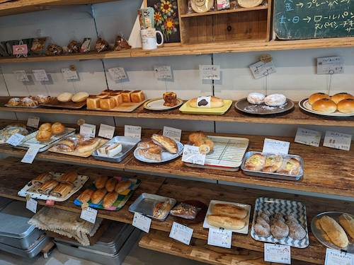
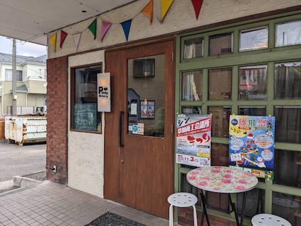
Previous
Next
「楽しいパン屋さん」がコンセプトのパン屋さんです。お子様からご年配の方全ての年代が食べられるように、通常のパンに加え卵・乳製品不使用のパンも多く販売されているのが特徴的です。店内も可愛いのでぜひ一度行ってみてはいかがでしょうか。
● 定休日：月曜日
● 営業時間：[火～土] 7:00～18:00 [日・祝] 7:00～15:00
● 距離：100m /西門から約1分
※現在の情報とは異なる場合があります
鷹の目
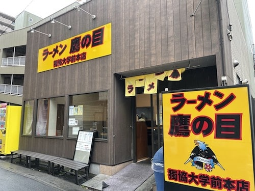
Previous
Next
ラーメン好きなら、獨協生なら、一度は絶対に行ってほしいのがここラーメン鷹の目です。本店である獨協大学前店には、オープン時から遠方からはるばる来られる方や近隣の方、大学生で賑わいます。鷹の目の最大の魅力は、豊富のメニュー、トッピングとその麺の量！通常サイズでも一般的なラーメンの２倍近くの量があり、トッピングの種類と量も選ぶことができる為、自分好みのラーメンを食べることができます。（女子盛りや麺少なめも選択することができます。）二朗系が好きな方は勿論、挑戦したことない方も是非この機会に行ってみてはいかがでしょうか、、？
● 定休日：基本無休
● 営業時間：11:00～15:00 17:00～22:00
● 距離：690m /東門から約５分
※現在の情報とは異なる場合があります